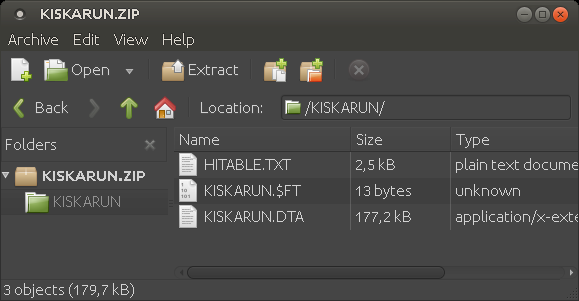
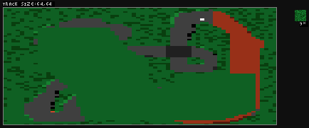

RallySportED is a contemporary asset editor for the classic racing game Rally-Sport.
RallySportED-js is a JavaScript port of RallySportED.
RallySportED © Tarpeeksi Hyvae Soft. Rally-Sport © Jukka Jäkälä, who is not affiliated with RallySportED. Any rights remain with their respective holders.
- An up-to-date browser with JavaScript enabled (recommended: Google Chrome)
- A decent CPU (recommended: at least a mid-range machine bought within the last 4 yrs.)
- Mouse and keyboard (+ full-sized screen recommended)
RallySportED-js is tested primarily in Linux, but should work just as well on Windows. You might find more problems on Apple's operating systems, since the developer has few or no Apple devices to test on.
Mouse controls
- Left click on ground: 3D view: Move the ground up. Texture & tilemap editors: Draw.
- Right click on ground: 3D view: Move the ground down. Texture & tilemap editors: Draw.
- Middle click on ground: 3D view: Paint the ground with the currently-selected ground texture.
- Right click on prop: 3D view: Change the prop's type.
- Left click & drag prop: 3D view: Move the prop.
- Shift + wheel: 3D view: Tilt the camera up/down. Texture editor: Zoom.
- Shift + left click on ground: 3D view: Add a new prop.
- Shift + left click on prop: 3D view: Remove the prop.
- Tab + left click: Eyedropper tool.
- Tab + hover on ground texture pane: Show the hovered texture's index value.
Keyboard controls
- E S D F: 3D view: Move the camera.
- 1 2 3 4 5: 3D view: Set the size of the ground-editing brush.
- L: 3D view: Level the terrain to a given height.
- W: 3D view: Toggle wireframe rendering on/off.
- B: 3D view: Toggle prop visibility.
- T: 3D view: Open the hovered texture in the texture editor.
- G: 3D view: Show a preview under the cursor of the currently-selected ground texture.
- R: Texture editor: Rotate the current texture.
- A: Open/close the ground texture pane.
- Q: Open/close the tilemap editor.
- Space: 3D view: Toggle the ground-smoothing mode on/off (smoothens the ground instead of raising/lowering it).
- Up/down arrows: 3D view: Raise/lower the ground by one where the mouse cursor is hovering.
- Ctrl + Z: Undo your latest changes.
- Ctrl + Y: Redo your latest changes.
- Ctrl + Shift + Z: Redo your latest changes.
- Ctrl + C: Texture editor: Copy the current texture onto the clipboard.
- Ctrl + V: Texture editor: Paste the current texture from the clipboard.
You'll find an option in the top left corner of the RallySportED-js UI's menu bar to download a copy of the current track.
The download will be in the form of a ZIP archive containing the track's assets, as demonstrated below.
You can reload a saved track file by dragging it onto the RallySportED-js editor view, as described in this topic.
There are two ways to load a track for editing or viewing in RallySportED-js: (1) by using a URL parameter, and (2) by dragging a track archive file. The file-dragging method is intended for track files located on your system, while the URL parameter method is for tracks hosted on RallySportED's servers.
The first way is to use a URL parameter. For a demonstration, check out this link. It appends the parameter track to the RallySportED-js URL to indicate that we want to load track #3 of the Rally-Sport demo ("democ" standing for "Demo C"). You might use these demo tracks e.g. as a basis for your custom tracks – being mindful that they're under copyright to someone other than the RallySportED author and have not been licensed for this purpose.
The second way is to drag a track archive file – which you got e.g. by exporting a track from RallySportED-js as described in this topic – from your system onto the RallySportED-js editor view.
Want to show a track of yours to a friend, but don't want the hassle of sending them a ZIP file? You can use the Serve feature to produce a temporary sharable URL.
To generate a sharable URL, follow these steps:
- Press the "Quick share" button at the top left of the RallySportED-js UI. After a few seconds – sometimes a bit more – the button should display the text "Sharing", and your browser's address bar should now contain a transientServer parameter.
- Copy the address bar link and give it to the people you want to share the track with. When they access this URL, they'll get a copy of the track as it appears in your browser at that moment.
A few things to keep in mind about quick share:
- The sharable URL works only for as long as you've got the RallySportED-js browser tab open and are connected to the internet. If you reload or leave the page, the URL will be invalidated and you need to generate a new one (by again pressing the "Quick share" button).
- Shared track data is transferred using WebRTC technology directly from your browser to people accessing the URL. The data doesn't pass through a RallySportED server.
- Any changes you make to the track – including loading a new track via drag & drop – will be visible to people when they reload the URL. That is, changes aren't transmitted in real time.
- Changes made to the track by somebody accessing the shared URL will affect only their local copy, not yours or anybody else's.
- While sharing is active, the "Quick share" button will display "Sharing (x)", where x is the number of times the shared URL has been accessed.
To stop sharing, press the "Quick share" button (called "Sharing" while sharing is active) again. The transientServer parameter should disappear from your browser's address bar, and the shared URL will no longer work. If you start sharing again, a new URL will be generated.
Here's a runner-downer on how to create a new Rally-Sport track with RallySportED!
Starting out
Making a new track with RallySportED always starts with loading in an existing track as a basis. Generally, this will be one of the eight tracks of the Rally-Sport demo.
So to get started, load in Rally-Sport track #1 by using the track URL parameter, like shown in this link.
When you direct your browser to that URL, RallySportED-js should load up the track and greet you with a view of something like this:

When you're ready to start editing, hit the L key on your keyboard to bring up the terrain-leveling prompt. The prompt's visual style will depend on your browser, but it should ask you for a height value to level the terrain to. Enter in '0' and select OK.

Having done so, you should be met with a fully flat terrain.
Next, press the A key to bring up the texture-selection pane. It'll pop up on the right-hand side of the screen. In the pane, hover the mouse over the second texture thumbnail (grass) and click the left mouse button. As you do this, a solid yellow rectangle should appear on the thumbnail to indicate that this texture is now selected.

Now press A again to close the texture pane, then Q to open the top-down tilemap view. This is a bird's eye view of the track, useful for laying down large-scale features, like roads. Press the 5 key to select the largest brush size (you'll see a number change on the upper right of the screen to reflect this), then click and hold the middle mouse button while you drag the cursor across the 2D map. You should see the map fill up with green. Fill it up fully, then press the Q key to return to the ground view.
(Note that there will always be a large white pixel visible in the tilemap view that you can't erase. It won't be visible on the actual track; rather, it represents the track's checkpoint – the point near which your car must pass for the lap to be counted as valid. You'll always want your road to pass over or close to this point, as you can see the game's original tracks doing.)
Once back in the ground view, move the camera over to the finish line, which looks like the picture below. When you've found it, open the texture pane again (A), and while holding down Tab to see the hovered-over texture thumbnail's index value, select texture #96 (gravel). Set your brush radius to 1 (hit the 1 key). With the middle mouse button, draw a line under the finish line, like in the image below. If you mess up, just hit Ctrl + Z to undo the mistake (Ctrl + Shift + Z redoes it).
When you now open the tilemap view (Q) again, you'll see a lot of green but also a brown horizontal line. This is a temporary visual aid for you that tells you where the finish line is, for when you're laying down the road.
Laying the road
While you have the gravel texture (texture #96) selected and the tilemap view open, press the 2 key to get a slightly enlarged brush size, then draw a road onto the map, starting at the finish line, snaking around the area, and winding back at the finish line.

Returning to the ground view (Q), you can see that there's now a road going through your scenery. Problem is, the road doesn't look smooth: it has a pixelated, staircasey appearance. To fix this, open the texture pane and look through it. You'll see a bunch of tiles with variously-angled slabs of gravel. With these textures, you can smooth out the edges of your road. It's a bit of manual labor, but suck it up. Below, you can see some 45-degree road tiles having been put down.
Decorating the terrain
Now that there's a road going on, even if you didn't yet smooth it all out, you can add some surface decorations to make the thing more interesting to drive around on.
The first thing you might do is manipulate the height of the terrain to create hills, dips, and so on. Just use the left and right mouse buttons to rough up the terrain some. Below, I've added some ground details.

The next bit of detail you might put in are spectators, human models that stand around waving as you drive past. To add them in, open the texture-selection pane (A) and select texture #240. Press G and move the cursor over the ground. You should see a spectator pop up on the tile over which the cursor is hovering. When you apply the texture (middle click), a spectator will be stood there. Experiment with textures #240 and up – there's bushes and wooden poles in there, too.

Tip: If you're not happy with the default Rally-Sport textures, you can hover the cursor over a texture and press the T key to open the texture editor.
Tip: Any ground tile painted with texture #0 is considered by Rally-Sport a water tile. In-game, water tiles form a smooth surface of a pre-determined height, while the tiles' actual heights determine how deep the water is when driven into. To see water tiles' actual heights in RallySportED-js, use the W key to enable the wireframe mode. To see how the tiles would look in-game, disable the wireframe mode.
Testing the track in Rally-Sport
Having put in a few bits and bobs, you might want to give the track a test drive. To do that, locate and click the "Download" button at the top left corner of the RallySportED-js page. Your browser should then serve you a ZIP file called DEMOA.ZIP, which contains the data files required to play the track in Rally-Sport.
If you don't already have the Rally-Sport demo on your computer, you'll need to get it. First, download the desktop version of RallySportED from Tarpeeksi Hyvae Soft's website, then extract the RALLYS.ZIP file that comes with it into a folder called C:\\RALLYS (or some other name, this one is just for convenience). Extract the RallySportED files into C:\\RALLYS, as well.
Now that you have Rally-Sport and RallySportED set up, extract the DEMOA.ZIP file into C:\\RALLYS so that the track's files come to be under C:\\RALLYS\\DEMOA\\. Then browse into C:\\RALLYS (in DOS or DOSBox), type "RLOAD DEMOA", and Rally-Sport should launch itself. From the game's main menu, select to start the race.

From this point on, you'd go back to RallySportED-js to make some changes to the track, test it again in-game to verify that it's still fun to drive, and rinse and repeat until you have a track you don't mind calling finished.
Adding an AI opponent
One of the things you might notice when you play your new track in Rally-Sport is that the CPU opponent doesn't seem aware of the changes you've made to the track. For instance, it might obliviously keep driving off the road or fail to avoid obstacles you've put in. Well, we can fix this by using the RAI tool that comes with the desktop version of RallySportED (which we installed earlier as part of this tutorial).
The RAI tool must be run under DOS (or in DOSbox). If you set up the desktop version of RallySportED as described above, you'll already have RAI in C:\\RALLYS. So you can navigate there, enter the command "RAI DEMOA", and now Rally-Sport should pop up in a special "recording" mode.

What you're seeing is the same as when you normally play the track in Rally-Sport, but now you have "Recording" written across the bottom of the screen. The gist of this is that RallySportED will record the lap you race and save it as the track's CPU opponent.
So just drive the lap normally, and once the race finishes, press the space key to quit back to the command prompt, where RAI should tell you that it succeeded in creating the new CPU opponent.
The new CPU opponent will have been saved into the track's DTA file under C:\\RALLYS\\DEMOA. You'll want to update the track's ZIP file with the new DTA file, then drag the updated ZIP into RallySportED-js to let it know of the changes. Otherwise, when you save the track again in RallySportED-js, you'd revert back to the original CPU opponent.